Мініатюрний хижак наших вод - прісноводна гідра (Hydra) - отримала свою назву на честь сумнозвісної лернейської гідри - змієподібної дочки Тифона і Єхидни, яка має отруйне дихання і мешкає в підземних водах. Залежно від фантазії авторів легенд про це чудовисько, у лернейської гідри була 9, 50 або навіть 100 голів, але всі джерела єдині в тому, що замість відрубаної голови виростали відразу три. Наша прісноводна гідра також здатна до вищої регенерації (відновлення цілого організму з невеликими фрагментами), але на цьому вся схожість з міфічним чудовиськом закінчується. Прісноводна гідра розгойдується, повністю віддавшись водній течії, і ворушить довгими щупальцями, сподіваючись, що якась істота доторкнеться до одного з них. Тоді щупальце обвивається навколо жертви і підтягує її до рота. Ненажерливість гідри вражаюча - вона може проковтнути дафній і циклопів у два або навіть три рази більше, ніж дозволяє об'єм її тіла, а потім під вагою з'їденого вона відривається від субтрату і падає на дно.
Подібно до гідри харчуються і морські актинії (Actiniaria). Ці морські організми, що найбільше нагадують фантастичні квіти Едему, насправді відносяться не до царства Флори, а до тварин і є родичами не менш фантастичних коралових поліпів і медуз. Харчуються вони різними безхребетними, а іноді рибами, вбиваючи або паралізуючи здобич "батареями" жалких клітин, що викидають нитки з отруйною рідиною.
Ще більше стрекальна активність властива медузам, багато з яких є небезпечними і для людини. При зіткненні з чорноморсбкою медузою коренерот (Rhizostoma pulmo) можна отримати справжній опік, як при дотику до кропиви, щоправда зникає він уже за пару хвилин, прицому безслідно.
Звичайно, спеціально на людину ціанея не полює, як їжа її цікавить будь-яка водяна дрібнота, риба, кальмари та... інші медузи. Але справа в тому, що діаметр желеподібного тіла деяких екземплярів цієї медузи сягає двох метрів, а довжина з'єднаних у вісім пучків щупалець - страшної жалючої зброї - 30 метрів. Ціанея ширяє у верхньому шарі води, практично під самою її поверхнею, лише час від часу скорочуючи желеподібний купол і здійснюючи легкі помахи крайових лопатями тіла. При цьому смертоносні щупальця медузи, які утворюють густу ловчу сітку, повністю витягаються, і жертва, випадково зіткнувшись з цією сіткою, моментально отримує смертоносну дозу отрути.
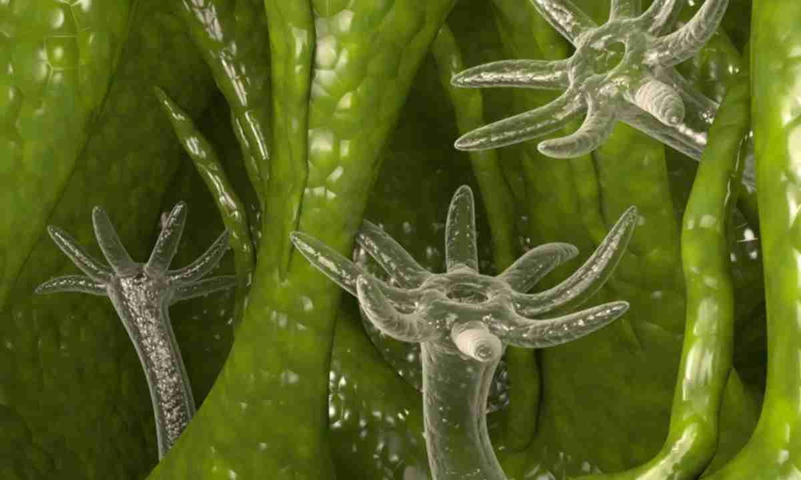Гідра
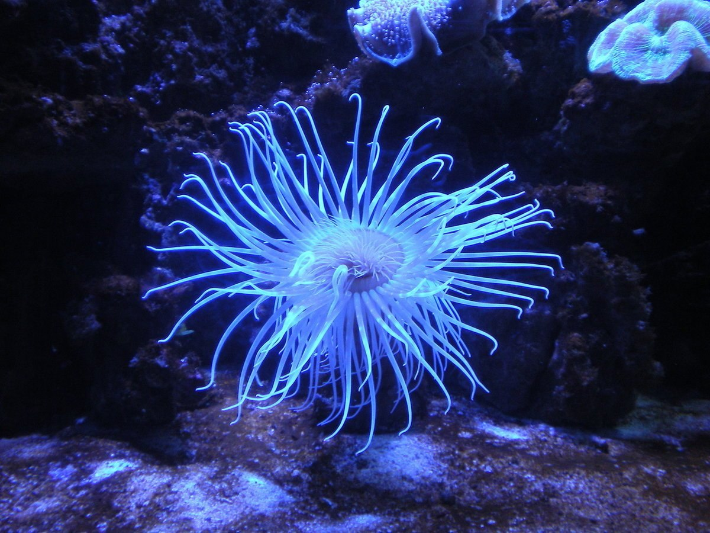Актинія
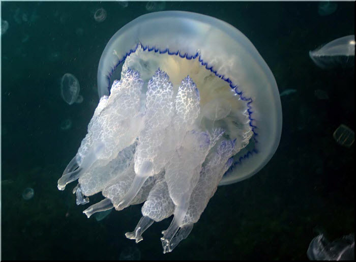Коренерот
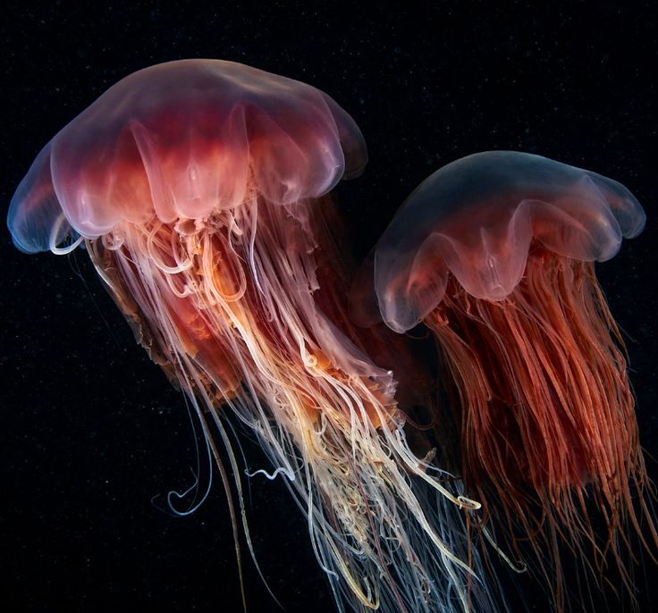Ціанея
Тропічна тихоокеанська зірка терновий вінець (Acanthaser plancs) - одна з небагатьох морських тварин, що харчуються коралами, вірніше сказати, їхньою м'якою частиною - кораловими поліпами. Під покровом ночі терновий вінець залишає свій притулок і вирушає на кораловий риф. Зазвичай ця морська зірка щоночі повертається до вже уподобаного місця і продовжує методично об'їдати м'які частини поліпів, залишаючи за собою голі кістяки. Як і в інших морських зірок, у тернового вінця зовнішнє травлення - шлунок вивертається назовні через рот і охоплює ними м'яке тіло поліпа. Один терновий вінець за один раз з'їдає коралів на площі, яка дорівнює половині його тіла (приблизно 30 кв. см), а за рік ця морська зірка знищує 5 кв. м коралових колоній.
Хижаки трапляються і серед, здавалося б, найбільш миролюбних істот - черевоногих молюсків, яких ми в побуті називаємо просто равликами. Особливий інтерес представляють конуси (Conidae) - равлики, які отримали свою назву за практичною правильну форму мушлі у вигляді згаданої геометричної фігури. Вони незважаючи на свою повільність, здатні впоратися з верткими темпераментними рибками, на яких і полюють. Конуси від природи наділені таким пристосування, яке своєю будовою нагадує помпову гарпунну рушницю. В рильці конуса знаходиться видозмінений зоб, що діє за принципом стріли гарпунної рушниці аквалангіста. Ця "стріла" забезпечена отрутою, не менш смертоносною, ніж отрута глибоководних восьминогів, і значно перевершує за силою дію отрути гримучої змії. Стріла безпомилково вражає ціль на відстані метра. Отрута в тілі жертви вступає в хімічну реакцію, і поранені залишають у воді своєрідні сліди-мітки. Конуси добре їх розпізнають, їм залишається тільки доповзти по дну до місця падіння жертви і насолодитися результатами полювання.
Найнезвичайніші, найбільші й "інтелектуально розвинені" з молюсків - головоногі, в першу чергу, восьминоги (Octopoda) і кальмари (Oegopsida).
Восьминіг залишає свій притулок і вирушає на полювання в сутінках, його улюблена їжа - краби і лангусти, він при нагоді нападає на риб, не гребує і більш легкою здобиччю - неповороткими донними молюсками, тобто восьминіг харчується практично всім, що потрапить в його поле зору. Хоча восьминіг чудово плаває, більшу частину здобичі він ловить, застигаючи зненацька. Ласих лангустів, які не бажають стати обідом, він спочатку паралізує, виприскуючи на них токсичну слину, а потім тягне знерухомлену здобич у свою схованку, де й приступає до трапези, смакуючи кожен шматочок. Біологами було встановлення, що у восьминогів частково зовнішнє травлення, тобто слина головоногого молюска розм'якшує і розчиняє тканини краба. До апетитних нутрощів молюсків восьминіг добирається, висвердлюючи отвір в їхній будиночках-мушлях радулою (терткою-скрубкою), що служить для потрібнення їжі у всіх молюсків без винятку.
На відміну від своїх родичів восьминогів, кальмари, мабуть, за винятком архітеутистів (легендарних гігантських кальмари), - одні з найбільш рухливих морських мешканців. Поступаються в спринтерських здібностях вони лише дельфінам і деяким рибам, наприклад рибі-меч. Традиційною здобиччю кальмарів є ракоподібні, молюски, іноді риба. Завдяки подовженому торпедоподібному тілу й парі трикутних плавників з боків тулуба, північноамериканський кальмар логіго (logigo pealei) з легкістю переміщається в товщі води. Він має здатність змінювати забарвлення, що теж важливо для успішного полювання. Кальмар спритно захоплює жертву, що пропливає повз, і, як і восьминіг, паралізує її отрутою, а потім відкушує голову. Що стосується гігантських двадцятиметрових кальмарів архітеутисів (Architeuthis), то легенд про них набагато більше, ніж достовірних відомостей про їхнє життя.
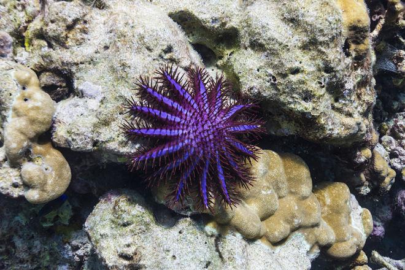Терновий вінець
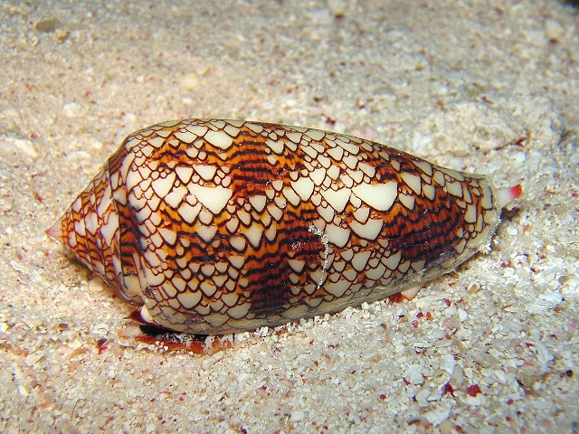Конус
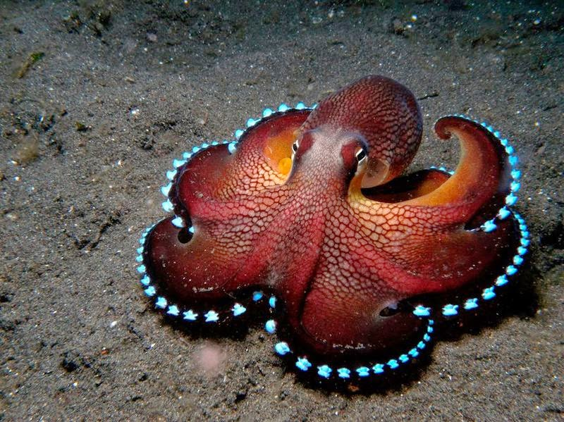Восьминіг
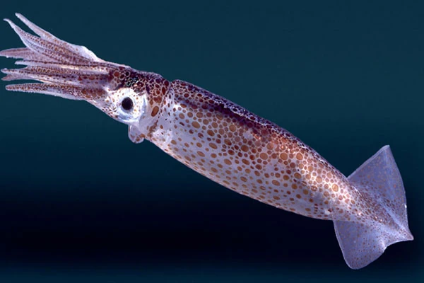Кальмар
Достеменно відомо, що головний ворог кракена - кашалот (Physeter catodon). Але слід розуміти, що повні драматизму описи лютих поєдинків цих одвічних супротивників у художній літературі не мають нічого спільного з реальністю. Судіть самі, навіть двадцятиметровий гігантський кальмар важить не більше 250 кг, а середній кашалот - близько 50-ти тонн. Чи можлтво уявити собі битву таких супротивників? Сила кашалота непорівняння з силою кальмара, яких у відповідь на захоплення потужних щелеп зубастого кита спроможний дати лише слабку відсіч. Так на тілі кашалота виникають множинні шрами - це відбитки присосок кальмара. І найголовніше, в шлунках кашалотів знаходять рештки архітеутиса, аж ніяк не навпаки.
Зубасті кити, а це нарвали, білухи, кашалоти, всілякі дельфіни, включаючи грізних косаток, - неперевершені морські мисливці. З усіх перерахованих Божих створінь, мабуть, найбільш приваблива для людини є дельфіни. Вони краще за інших вивчені, про них складено безліч легенд і розказано тисячи правдивих історій.
Найбільш відомий вид дельфіна - афаліна (Tursiops truncatus) - за допомогою свого ехозонда здатний отримувати цілком адекватне відображення навколишнього світу. Завдяки цьому дельфін може легко оцінити відстань до об'єкта полювання і навіть розміри передбачуваної здобичі. Переслідуючи зграю риб, дельфін пересувається ривками, чпсто різко змінюючи напрямок руху. Афаліна здатна мчати зі швидкістю до 40 км/год, при цьому, чи то з пустощів, чи то від надлишку сил, дельфін вистрибує з води на висоту 4-5 метрів. У пошуках їжі афаліни видають особливі звуки, що віддалено нагадують скрип дверних іржавих петель. Пояснюючи за домоиогою особливих сигналів, дельфіни координують свої дії і спільно "беруть в кліщі" зграю риби. Можливо, скрипучі звуки дельфіни застосовують і для дезорієнтації риби, проголомшуючи її.
Ехозонд підводних мисливців настільки універсальний, що дозволяє американським річковим дельфінам амазонська інія (Inia geoffrensis) промишляти в каламутних водах Амазонки, а під час розливу річок прекрасно орієнтуватися і плавати між деревами затопленого лісу. Ці носаті білувато-рожеві прісноводні дельфіни полюють на крабів і риб та користуються великою повагою в індіанців амазонського басейну. Коли місцеві жителі полюють на річкову рибу в основному з острогами, а поява дельфінів змушує переляканих риб залишати глибини і виходити на мілину, де вони і стають легкою здобиччю місцевих рибалок. Інія - мабуть, найграйливіша з прісноводних дельфінів: відомо, що він любить пожартувати, підкидаючи черепах у повітря і вихоплюючи весла у рибалок.
Косатки або кити-вбивці (Orcinus orca), - одні з наймогутніших морських мешканців. Це універсальні мислівці, чиї способи здобичі так само різноманітні, як і сама здобич. Ці гіганти вагою до восьми тонн вельми швидкохідні, під час переслідування, наприклад, оселедцевого косяка вони розвивають швидкість до 55 км/год. Улюблена їжа косатки - риба, ранньою весною біля берегів Норвегії збираються гігантські косяки оселедця, слідом за якими приходять і косатки. Під час оселедцевого бенкету лише риболовецькі судна створюють їм конкуренцію. І в цей період благоденства косатки не звертають уваги на інших любителів оселедця, хоча в інший час зіткнення кита-вбивці з кашалотом або дельфіном закінчилося б трагічно для останніх. Коли риби мало, косатка полює на будь-яку морську живність від кальмарів до кита, від пінгвина до дельфіна. Під час нападу на велику здобич косатки об'єднуються в згнаї з 10-20 голів, так вони полюють на горбатих китів. Нападаючи на полосатика або кита-горбаня, одна група косаток пірнає під морського гіганта, блокуючи його знизу і не даючи жертві піти на глибину, де атака мала б менший успіх. Інша група китів-убивць, розташовуючись над жертвою, перекриває їй кисень, тобто не дозволяє киту дістатися до поверхні й ковтнути повітря. Китам, як і всім морським ссавцям, необхідний кисень, і його нестача призводить до швидкої втрати сил. У холодних приполярних водах різкими ударами знизу косатки збивають тюленів, що мирно дрімають на крижинах. Вони "пасуться" біля лежбищ морських котиків, часом влаштовуючи справжню криваву бійню. Жоден котик або його більштй родич морський лев не може відчувати себе в безпеці, поки поблизу промишляє хоч одна косатка. На лежбищах морських левів в Аргентині біологи помічали нові прийоми хижаків, не властиві їм в інших місцях полювання. Косатки перешкоджали виходу морських левів в безпечну зону, на берег. Вони, нехтуючи влісною безпекою, поодинці або групами кидалися на мілководдя, в зону прибою, затримувалися там на 5-10 секунд і ловили морських левів, що вибиралися на берег. Наступні вали прибою несли мисливців з мілини, але зі здобиччю в роті! І звичайно, як і всім дельфінам, ехелокація дозволяє косаткам полювати в найкаламутнішій воді. Клацання, що видають косатки, настільки потужні, що водолази, яким траплялося бути в воді поряд із ними, скаржилися на дуже неприємне відчуття: здавалося, що їхні тіла "простукують" з усіх боків! Косаток називають холоднокровними машинами для вбивства, але це цілком зрозуміло: щодня одному киту-вбивці вагою 4000 кг необхідно мінімум 100-200 кг м'яса.
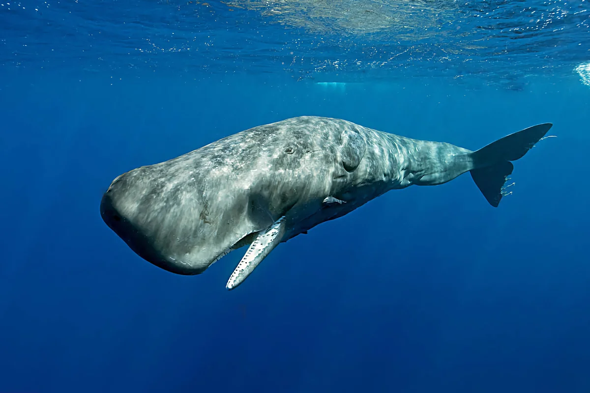Кашалот
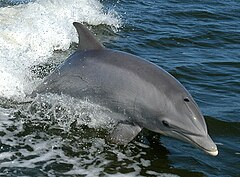Афаліна
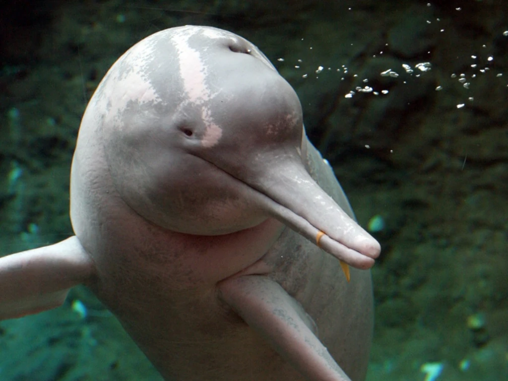Амазонська інія
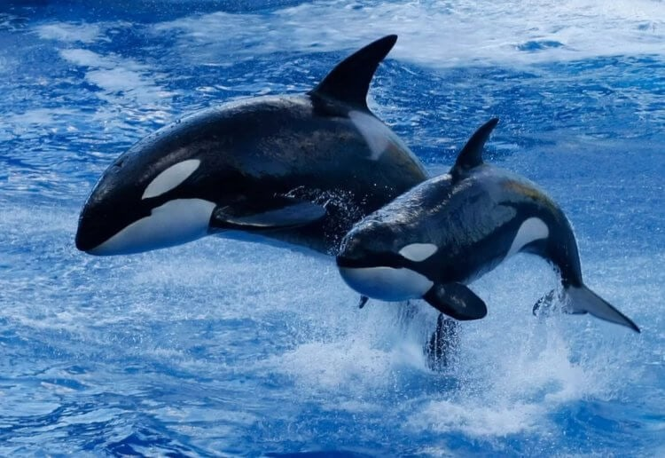Косатка